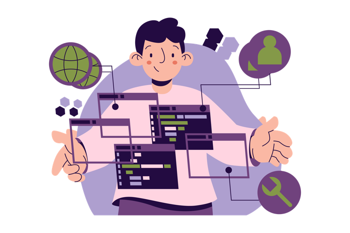

WInf-Projekt · Technik
Systemarchitektur.
Schritt für Schritt vom Browser bis zum Server, an einem durchgehenden Beispiel.
Schritt für Schritt vom Browser bis zum Server, an einem durchgehenden Beispiel.

Eine Mitarbeiterin beantragt zwei Wochen Urlaub. Ihre Teamleitung prüft den Antrag und genehmigt ihn. Danach sinkt der Resturlaub um zehn Tage.
Klingt nach einem Formular und einer Tabelle. Wir bauen trotzdem die ganze Architektur des Projekts darum herum, denn jede Zeile der Geschichte stellt eine Anforderung.

| Anforderung | Baustein | Schritt |
|---|---|---|
| Mitarbeitende bedienen das System im Browser | React SPA | 1 |
| Anträge und Resturlaub werden dauerhaft gespeichert | Microservices PostgreSQL | 2 |
| Der Antrag durchläuft einen festen Ablauf mit Genehmigung | CIB seven | 3 |
| Nur die Teamleitung darf genehmigen | Keycloak | 4 |
| Alles ist sicher unter einer Adresse erreichbar | Nginx Proxy Manager | 5 |
| Neue Versionen kommen kontrolliert auf den Server | GitHub Actions, Portainer | 6 |
→Mit einer Webanwendung, die komplett im Browser läuft.
Eine Single Page Application wird einmal geladen: HTML, JavaScript, CSS. Danach läuft sie auf dem Rechner der Nutzerin und holt nur noch Daten nach, als JSON über REST.
src/AntragsListe.tsxconst api = import.meta.env.VITE_API_URL; const res = await fetch(`${api}/antraege`); const antraege = await res.json(); // [{ id: 42, von: "2026-08-03", bis: "2026-08-14" }]
„Das Frontend läuft auf dem Server.“ Der Server liefert die Dateien nur aus. Jeder Aufruf, den die App macht, kommt aus dem Browser, also von außen.
→In einem Microservice mit eigener Datenbank.
Der Urlaubs-Service kennt genau ein Thema: Anträge. Panache speichert sie in PostgreSQL, REST Jackson liefert sie als JSON. Kein SQL, kein Mapping-Code.
Urlaubsantrag.java · UrlaubsantragResource.java@Entity public class Urlaubsantrag extends PanacheEntity { public String mitarbeiterId; public LocalDate von, bis; } @Path("/antraege") public class UrlaubsantragResource { @GET public List<Urlaubsantrag> alle() { return Urlaubsantrag.listAll(); } }
Resturlaub, Team und Vorgesetzte sind ein anderes Fachthema. Also bekommt es einen eigenen Mitarbeiter-Service mit eigener Datenbank.
Der Urlaubs-Service liest die Tabelle mitarbeiter direkt. Benennt jemand eine Spalte um, bricht ein fremder Service.
Wer Resturlaub braucht, fragt die REST-API des Mitarbeiter-Service. Jeder Service wird eigenständig versioniert und deployed.
→Eine Process Engine, die den Ablauf als BPMN ausführt.
Ohne Process Engineif (antrag.status == OFFEN && user.istTeamleitung()) { antrag.status = genehmigt ? GENEHMIGT : ABGELEHNT; if (genehmigt) { mitarbeiterClient.bucheResturlaub(antrag); // und wenn der Mitarbeiter-Service gerade down ist? } } // Erinnerung nach 3 Tagen? Vertretung im Urlaub? // Wer sieht, welche Anträge bei wem liegen?
ifs.Den Ablauf modellieren statt programmieren und von einer Engine ausführen lassen.
Der Antrag startet eine Prozessinstanz. Sie trägt nur die Referenz antragId = 42, die Antragsdaten bleiben im Urlaubs-Service.
Die Engine wartet an der User Task, Stunden oder Wochen, und weiß jederzeit, bei wem der Antrag liegt.
Nach der Genehmigung ruft die Engine selbst den Mitarbeiter-Service auf. Sie orchestriert die Services.
CIB seven ist ein Fork von Camunda 7. Eine zentrale Instanz führt die BPMN-Prozesse aller Teams aus. Auf dem Server gibt es keine Weboberfläche, nur die REST API unter /engine-rest.
Welche Instanzen laufen, welche Task offen ist, welche Variablen gesetzt sind.
Zeitraum, Person, Resturlaub. Die fachliche Wahrheit bleibt in ihren Datenbanken.
Im Prozess stehen deshalb meist nur IDs. Wie man Fachdaten bei Bedarf nachlädt, zeigt die Seite Daten in BPMN Prozessen.
GET https://urlaub.winfprojekt.de/antraege/42 → { "id": 42, "von": "2026-08-03", "bis": "2026-08-14" }
GET https://cibseven.winfprojekt.de/engine-rest /task?assignee=teamleitung → [{ "name": "Antrag prüfen", "processInstanceId": "…" }]
Eine Liste von Anträgen anzeigen: Microservice. „Welche Tasks sind bei mir offen?“ oder Prozess starten: CIB seven.
→Aus einem signierten Token, ausgestellt von Keycloak.
Drei Services mit drei Passwort-Tabellen wären drei Angriffsflächen. Stattdessen übernimmt Keycloak als zentraler Identity Provider Login, Rollen und Token-Ausgabe nach OpenID Connect.
Authorization: Bearer ….{ "alg": "RS256",
"kid": "realm-key" }{ "preferred_username": "teamleitung",
"realm_access": { "roles": ["teamleitung"] },
"exp": 1791806400 }Nur Keycloak hat den privaten Schlüssel. Jeder Service prüft mit dem öffentlichen, ohne Keycloak zu fragen.
Im Service reicht dann eine Annotation: @RolesAllowed("teamleitung") auf dem Endpunkt zum Genehmigen. Die Extension quarkus-oidc erledigt den Rest.
→Ein Reverse Proxy nimmt alles an und verteilt nach Subdomain.
Nginx Proxy Manager ist der einzige Dienst, der aus dem Internet erreichbar ist. Er terminiert TLS mit Let's-Encrypt-Zertifikaten und leitet jede Subdomain an ihren Container weiter.
| Öffentlich (HTTPS) | Intern (HTTP) |
|---|---|
frontend.winfprojekt.de | frontend:80 |
urlaub.winfprojekt.de | urlaub-service:8080 |
cibseven.winfprojekt.de | cibseven:8080 |
keycloak.winfprojekt.de | keycloak:8080 |
Deshalb zeigt der Bauplan nur eine Kante zur SPA: jeder Aufruf aus dem Browser, auch an Services, CIB seven und Keycloak, geht durch diese Tür.
docker-compose.yml · urlaub-serviceservices: urlaub-service: image: ghcr.io/org/urlaub-service:1.2.0 networks: [nginx-reverse-proxy, intern] datenbank: image: postgres:16 networks: [intern] # nur intern networks: nginx-reverse-proxy: { external: true } intern: { driver: bridge }
nginx-reverse-proxy ist ein externes Netz auf dem Host. Wer darin hängt, ist für den Proxy per Servicename erreichbar.intern. Sie ist für den Service erreichbar, aber nie von außen.ports:-Eintrag. Ein offener Host-Port würde am Proxy vorbei führen.→Als Docker-Image, gebaut von der Pipeline, ausgerollt mit Portainer.
v1.2.0Push auf main oder ein Versions-Tag nach Semantic Versioning.
Maven-Build, Docker-Image bauen, alles im Workflow docker.yml.
Das Image liegt als ghcr.io/…:1.2.0 in der Registry.
Tag in der docker-compose.yml hochziehen, dann Pull and redeploy.
In Produktion setzt Portainer QUARKUS_DATASOURCE_JDBC_URL und QUARKUS_OIDC_AUTH_SERVER_URL. Im Repository stehen keine URLs und keine Passwörter.
Ist nichts konfiguriert, startet Quarkus PostgreSQL und Keycloak selbst als Container. Deshalb bleibt die application.properties leer.
Jeder Baustein beantwortet genau eine Frage aus der Geschichte.
Fahrt mit der Maus über die Bausteine im Plan.
React SPA, die Microservices und die BPMN-Prozesse. Proxy, Keycloak, Datenbanken und die Engine selbst werden nur betrieben.
frontend.winfprojekt.deantragId = 42genehmigt = trueJeder ihrer Aufrufe kommt von außen und braucht ein Token.
Mit eigener Datenbank. Fremde Daten nur über deren REST-API.
CIB seven hält den Zustand, im Prozess stehen IDs statt Kopien.
Liste anzeigen: Microservice. Offene Tasks, Prozess starten: CIB seven.
Services validieren das JWT selbst mit dem öffentlichen Schlüssel.
Nur der Proxy ist öffentlich. Keine ports:, Konfiguration aus Umgebungsvariablen.